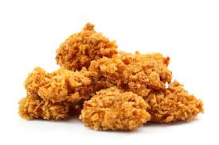
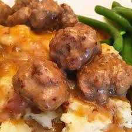
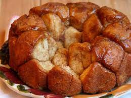

Recipes For Those Who Don't Like To Be Told What To Do
A meal that can be accomplished without a single measuring cup or spoon
If you like to eyeball your way through the kitchen, these recipes will bring you frivolous joy.
An appetizer to get the angst out.
Garlic Rolled Chicken

A meal to get your hands dirty.
Swedish Meatballs

A desert that's finger licking good
Monkey Bread"

Alright so maybe there was a little bit of measuring in the dessert, but desserts are always demanding and high maintenance,
and this one allows for that wiggle room enough that you can eyeball wihout a measuring cup and still have
a good tasting situation.
Any of these recipies are forgiving and able to shoulder some ballpark general measuring. Also you can vary creatively
such as spices with the chicken, any sides that love to hang out with gravy for the meatballs, mashed potatoes,egg noodles,
a side of veggies, so forth. The monkey bread can be mixed with nuts for exta nutritianal value .
No endless list of ingredience and no dogmatic rules setting you up for failure, yet people will be coming back again and again for another bite.
ENJOY!